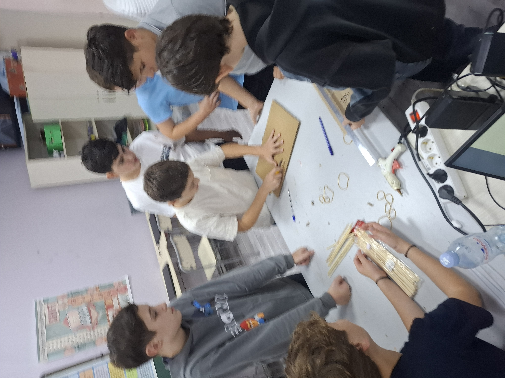
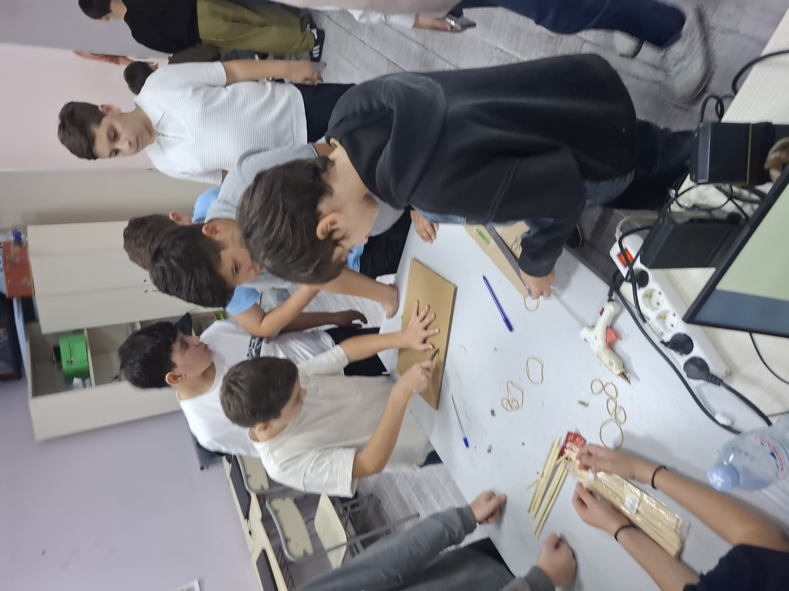

STEAM კლუბი "THINK • CREATE • INNOVATE" - ის პროექტები
გაეცანით ჩვენი კლუბის წევრების მიერ შექმნილ ინტერდისციპლინურ და შემოქმედებით პროექტებს:
- ეკოლოგიური ინიციატივები: ჭკვიანი სათბურების მოდელები და გარემოს დამცავი კონსტრუქციები.
- მეცნიერული ექსპერიმენტები: ფიზიკისა და ქიმიის სახალისო პრაქტიკული კვლევები.
- ხელოვნება და ტექნოლოგია (Art+Tech): ციფრული დიზაინი და არტ-ინსტალაციები.
რობოტიკის კლუბი "ROBOLAB" -ის პროექტები
ინოვაციური საინჟინრო მიღწევები და ავტომატიზრებული სისტემები:
- ავტონომიური რობოტები: ლაბირინთის გამვლელი და ხაზის მიმყოლი რობოტების აწყობა.
- მრავალფუნქციური მექანიზმები: LEGO Mindstorms და Arduino პლატფორმებზე დაფუძნებული მოწყობილობები.
რობოტიკის კლუბი "ROBOLAB" -ის შეხვედრები
ჩვენი ყოველკვირეული შეხვედრები, დისკუსიები და პრაქტიკული ვორქშოფები.
ყოველკვირეული შეხვედრების სრული ფოტოარქივის სანახავად გადადით ალბომში:
📁 იხილეთ ყოველკვირეული შეხვედრების ფოტოებიგალერეა
ფოტომასალა ჩვენი კლუბების საქმიანობიდან:



ინოვაციები
თანამედროვე ტექნოლოგიური ტენდენციები, იდეები და სამომავლო გეგმები:
- ხელოვნური ინტელექტისა და მანქანური სწავლების ელემენტები ჩვენს პროექტებში.
- 3D ბეჭდვისა და პროტოტიპირების ახალი შესაძლებლობები სკოლაში.